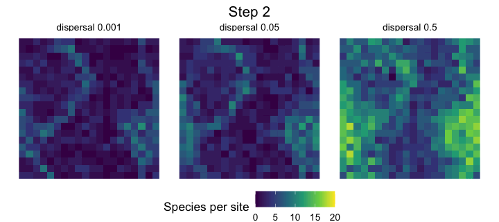
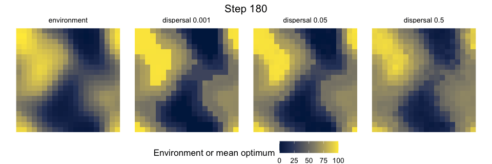

Watching a metacommunity assemble
Source:vignettes/articles/watching-assembly.Rmd
watching-assembly.Rmdsimulate_metacommunity() can record the state of every
site through time with record_steps. Plotting those states
as maps shows how dispersal shapes community assembly more directly than
a table of final values does.
These animations illustrate the model; each panel is a single run
with one tree and one landscape. To compare scenarios, use replicates,
as in vignette("phylogenetic-structure"). The complete
script, which uses ggplot2 and gganimate, is data-raw/animation_dynamics.R.
Recording the dynamics
We simulate 30 species on a 20 x 20 torus, with competition among relatives, and keep the abundances at the steps to be drawn.
library(comdynamite)
tree <- ape::rcoal(30)
land <- landscape_grid(20, env_bandwidth = 3, disp_scale = 1.5)
traits <- species_traits(tree, lambda = 1, sigma_mean = 8, sigma_sd = 2)
alpha <- competition_matrix(tree, "phylo", inter_max = 0.5)
frames <- seq(5, 400, 5)
sim <- simulate_metacommunity(land, traits, alpha, dispersal = 0.05, n_steps = 400,
record_steps = frames)
dim(sim$history) # sites x species x recorded stepsEach slice of sim$history is a sites x species matrix.
Join it to the site coordinates, stack the slices in a long data frame
with a step column, and draw it with
geom_raster(), adding
gganimate::transition_manual(step).
Assembly in a constant environment
The maps show the number of species in each site, for three emigration probabilities. Species are seeded in all sites until step 100, so richness is high at the start and falls as competition and the environment remove species.

With little dispersal, most sites end with few species. As dispersal increases, immigrants keep species in sites where they could not persist alone, and local richness rises.
Tracking a moving environment
Here the environment stays fixed until step 200, and then the whole
map moves one cell every 5 steps, passed to the simulation through
env_time. The first panel shows the environment. The others
show the mean optimum of the individuals in each site, so a panel that
resembles the first one has species matched to their sites. Empty sites
are grey.
env_map <- matrix(land$env, 20)
shift <- function(k) c(env_map[, (1:20 + k - 1) %% 20 + 1])
env_time <- sapply(1:400, function(t) shift(max(0, t - 200) %/% 5))
sim <- simulate_metacommunity(land, traits, alpha, dispersal = 0.05, n_steps = 400,
env_time = env_time, record_steps = frames)
In this run, at a dispersal rate of 0.001 species cannot keep up: sites become unsuitable faster than they are colonised, and no site is occupied by step 400. At 0.05 and 0.5 communities follow the environment, and the higher rate gives a smoother map, because immigrants blur the differences among neighbouring sites.
Species here have no evolution and no input from outside the landscape, so a species lost from the region does not return.